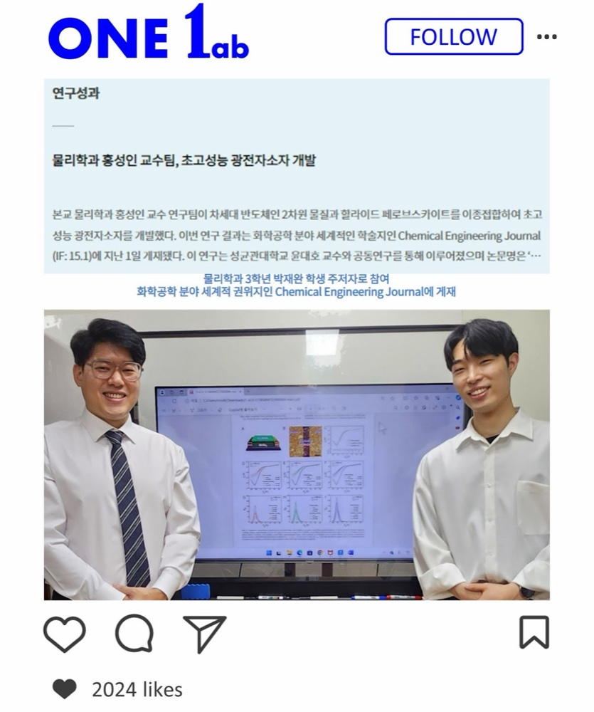
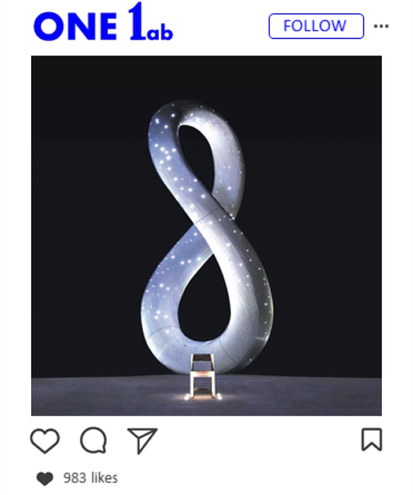

‘자랑스러운 가천인상(Proud Gachon Student Award)’을 받은 우리 연구실 학부연구생 네 분을 진심으로 축하합니다!
#Gachon University #DreamBig #HardWorkPaysOff #ONE 1ab
Dec 13th, 2024

학부연구생 Jaewan Park 님이 한국물리학회 학술대회에서 우수발표상을 받았습니다. 축하합니다!
# Congrats Jaewan Park #Gachon University #KPS #Award #ONE 1ab
Oct 26th, 2024

Jaewan Park 님이 공동 제1저자로 참여한 페로브스카이트–전이금속 칼코겐화물(TMD) 광검출기 연구가 Chemical Engineering Journal에 게재됐으며, Gachon University 홈페이지에 소개됐습니다.
# Congrats Jaewan Park #Gachon University #CEJ #ONE 1ab
Jan 11th, 2024

Prof. Seongin Hong이 초청을 받아 발표했습니다.
발표는 모교인 Sungkyunkwan University에서 열렸습니다.
발표 주제는 이차원 소재와 광센서였습니다.
#Sungkyunkwan University #SKKU #ONE 1ab
Oct 18th, 2022

Seongin Hong이 물리학과에 부임했습니다.
소속은 Gachon University이며, 직위는 조교수입니다.
#Gachon University #Physics #ONE 1ab
Feb 1st, 2022